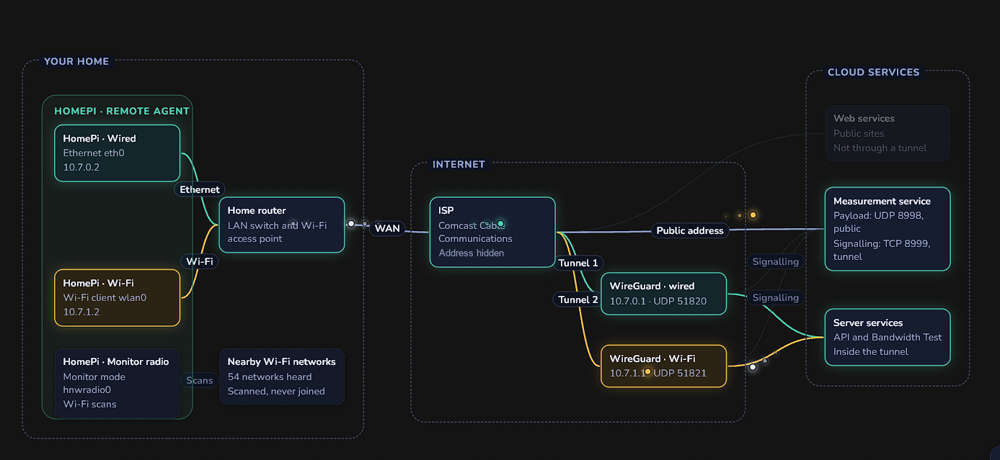

Several systems working together
A Python agent on a Pi, a FastAPI server, a Postgres database and a React app, plus a WireGuard hub, a traffic generator and a second radio that listens for Wi-Fi.
Hi, I'm Evan You
HomeNetWatch watches my home internet from a little Raspberry Pi, sends what it finds to a server in the cloud, and tells the story on a live dashboard. I built it with AI as a teammate, and it's running right now. Come and take a look.
One click gets you in as a guest on my real home network. No sign-up. You can look around but not change anything, guests can't see my public IP address, and your session ends after three quiet minutes.
This is the real app, showing measurements my Raspberry Pi took a few minutes ago. Try the Network Path Diagram, Path View with its BGP comparison, the Wi-Fi view and the voice-quality charts. Click anything you like. You can't break it.
A couple of things to know. I hide private details like IP addresses from guests. Anything that starts tests, changes settings or adds devices is turned off for guests, so my small server doesn't get overloaded. Everything you see is live data.
How fast it moved
This is the real commit history. Every stage ran on real hardware and went through review before the next one started.
I started with a written spec and the Docker layout, then the server, then the first dashboard.
The Raspberry Pi agent, the WireGuard tunnel hub, Wi-Fi scans, path traces, and a second radio listening to the airwaves.
Secure sign-up for new agents, traceroutes with the networks they cross, and a tighter layout across the app.
A faster speed test, a read-only guest account, voice-quality flows, Wi-Fi link pinning, a redesigned Airwaves view, an animated Network Path Diagram, and the new name.
A new Path View that works on a phone, traces to any host on demand, zoomable charts, stronger security headers, and this page.
What's inside
Moving fast is easy when a project is small. This one touches hardware, networking, security, internet routing data and a live interface.

A Python agent on a Pi, a FastAPI server, a Postgres database and a React app, plus a WireGuard hub, a traffic generator and a second radio that listens for Wi-Fi.
New devices sign their requests and wait for my approval. Each gets its own encrypted tunnel, roles are enforced on the server, and the guest account is read-only.
Wired and Wi-Fi are measured separately on one little computer. A small C program steers each test out the right network interface.
Traceroutes get ASN, IXP and RPKI details, are grouped by the network that owns each hop, and are compared with the path BGP announces.
24 tables and 34 migrations. Raw results are kept for six months, then rolled up into hourly and daily averages so storage stays small.
Animated diagrams, charts you can zoom with a drag, a layout that works on a phone, and traces that go out to the Pi and back in seconds.
Real projects run on real budgets. These limits shaped how I built it, and working inside them is part of the job.
Heavy AI-assisted development adds up fast. I spread the work across several coding agents and used the Git repository to keep them in step: one source of truth, a branch for each task, pull requests as the hand-off, and written rules every agent follows.
A home router and a Raspberry Pi don't have much CPU, memory or bandwidth to spare, and there's little to tune. So I was careful about how resources get used: checks are spaced out, heavy tests never overlap, and only one on-demand trace runs at a time.
I know AWS and GCP well, but I wanted to keep my costs as low as I could, ideally free. So I moved to Oracle Cloud and its free tier, and I kept the server small: light APIs, rolled-up history, and a demo that can't kick off expensive work.
A separate non-production environment is a must for safe testing. That means a separate Raspberry Pi for each environment, and I didn't want to buy more hardware until I'd proven that one would work for this project. It has, so the next Pi is an easier decision. Until then, virtual Pi instances cover most of it. They work, but they can't reproduce real Wi-Fi radios or how a real home network behaves.
What I'd love to build next is a set of AI agents that read the logs, work out the root cause of an outage, and then act: restore service, fix the problem, and even contact the ISP to get things back up. It's a plan, not a build. Running agents like that costs real money, so it isn't practical yet. It's on the roadmap as Phase 2.0, for when the economics catch up.
How I work
Typing questions into a chat window won't get you this far. What did was a simple way of working: a plan the AI follows, safety checks that catch its mistakes, and me making the calls.
AI writes much of the code. What it can't give me is judgment, and that's where 30 years comes in: IT, infrastructure, cloud, networking, cybersecurity and systems development. I know what a good design looks like, where things tend to break, and what you pay for skipping security or operations. My IT degree from the Rochester Institute of Technology (RIT) taught me system design, UI, UX and coding, and it all still helps. I did write code myself, but that was a long time ago. AI fills that gap. It does the typing while I steer, and my background is what lets me steer well and check its work.
Read more
About me
At heart, I am a technologist, a problem solver, and a builder. I love figuring out how systems tick, building new tools, and helping people—and organizations—do the same.
With an IT degree from RIT and 30 years across infrastructure, cloud, networking, and cybersecurity, my foundation spans the entire stack, from UI/UX and coding to architecture and security. Today, I treat AI not as a chat interface, but as an integral engineering partner—anchored by rigorous plans, architectural rules, code reviews, and safety rails that keep high-velocity delivery reliable and secure.
What energizes me most is teaching. I work directly with teams to adopt these modern, AI-augmented workflows, upskill their engineering culture, and fundamentally elevate how their organization builds and delivers IT services.
Away from the keyboard, I play golf. I've been part of a golf league, the Golf Mission Association, for the past five years. This year I started analyzing our weekly golf data and built an app that creates our weekly podcast automatically. It pulls the match data from Golf Genius, the online golf app, and turns it into a deep analysis of the matches, made to be entertaining but also accurate. It grows and changes a little every week. This year was a trial, and next calendar year it goes into full production.